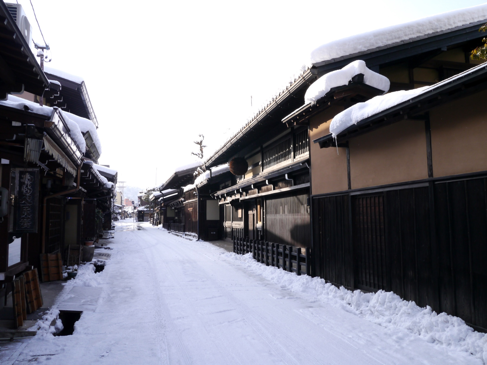
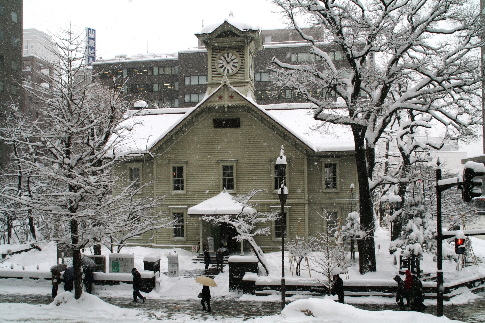
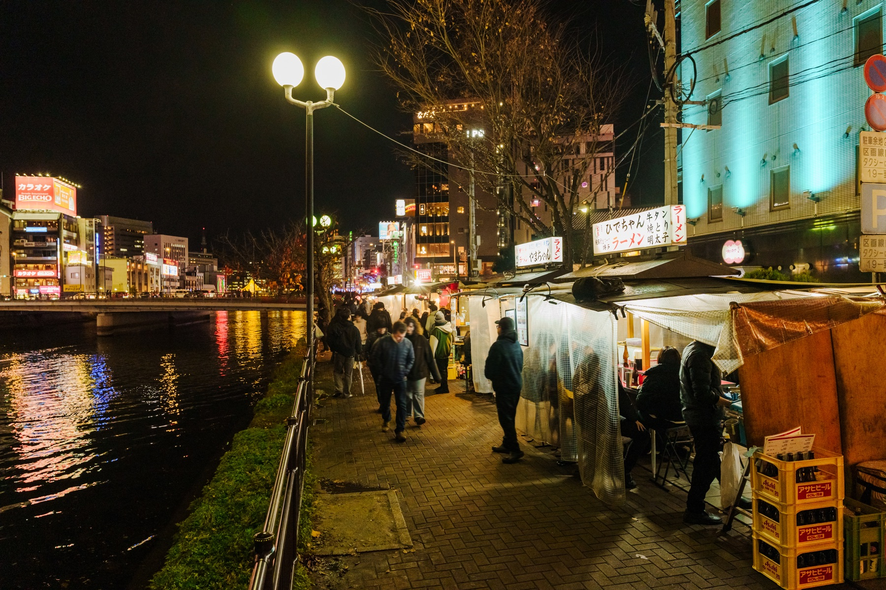
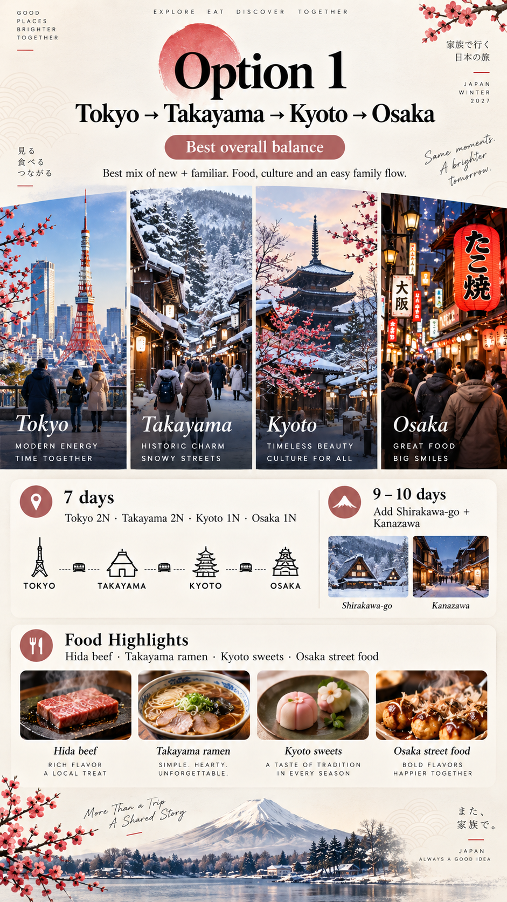
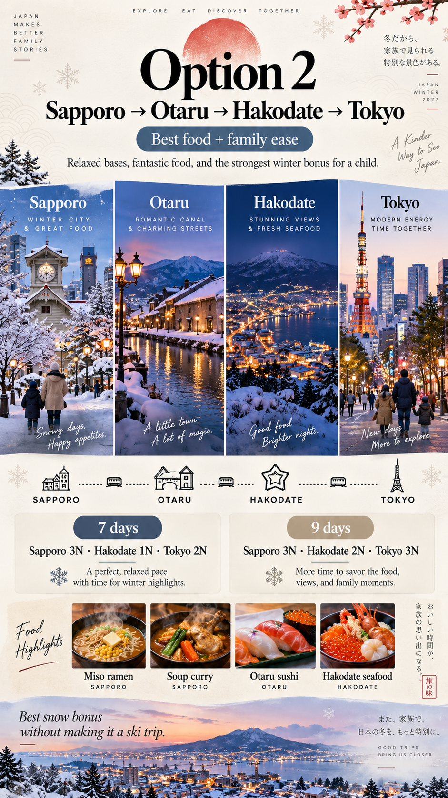
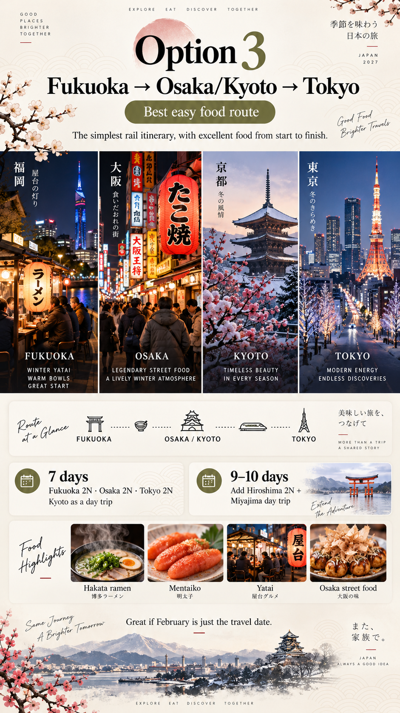

Alps & classic cities
Discover Takayama’s old streets, local crafts and Hida beef. A mountain-town visit alongside Kyoto and Osaka.
Explore this route
February journeys
Mid–late February · 7–10 days

Tokyo is included in every route. The choice is between Takayama and the classic cities, Hokkaido’s snowy landscapes, or Fukuoka and Kansai.
Discover Takayama’s old streets, local crafts and Hida beef. A mountain-town visit alongside Kyoto and Osaka.
Explore this route
Snow play in Sapporo, a day in Otaru and seafood in Hakodate. A northern winter with canal towns and harbour views.
Explore this route
Explore Fukuoka through Dazaifu, Marine World and Hakata ramen. Continue to Osaka, with Kyoto as a day trip.
Explore this route
A Disney day fits any route’s Tokyo stay. Osaka adds the option of Universal Studios Japan. Choose around favourite characters and leave a full day for the park.
Before booking, check ride suitability and height limits: Disney parks · Universal Studios Japan.
Mountain-town charm & classic cities
A first visit to Takayama brings old streets, local crafts and Hida beef. Continue to Kyoto and Osaka for a return to familiar city favourites.


For the 7-day route
Old towns, traditional crafts and city walks.
Explore traditional streets and morning markets for a closer look at mountain-town life.

Create a traditional sarubobo doll—a hands-on activity and a local souvenir.
Explore a favourite neighbourhood at a relaxed pace, with temple visits and sweet stops.
Stroll beside Dotonbori’s canal, see the illuminated signs and stop for street food.

Add Shirakawa-go + Kanazawa. Make Osaka the final base, with Kyoto as a day trip.
9 days: Tokyo 2 · Takayama 2 · Kanazawa 2 · Osaka 2 nights.
10 days: add one more Osaka night.
Stops shown, not exact train routes.
Snow, canal towns & northern cuisine
Hokkaido offers a change of scenery from Japan’s major cities: snow play, Otaru’s canal and music-box shops, and Hakodate’s harbour. Regional ramen, soup curry and seafood round out the route.


For the 7-day route
Snow play, canal walks and indoor discoveries.

Enjoy sledding and snow play without planning a full ski holiday.
Combine canal walks and music-box shops on a day trip from Sapporo.

Discover how Shiroi Koibito cookies are made, with an indoor break from the winter weather.
Visit the morning market and historic harbour streets, allowing time for warm-up breaks.
Ramen and soup curry in Sapporo; seafood farther along.

Nine days allows a gentler pace. Spend a full day in Hakodate between transfers.
9 days: Sapporo 3 · Hakodate 2 · Tokyo 3 nights.
10 days: add one more Sapporo night.
Stops shown, not exact train routes. Dashed line: day trip.
Kyushu flavours & city day trips
A first visit to Fukuoka combines Dazaifu and Marine World with Hakata ramen and evening food stalls. Continue to Osaka, with Kyoto as a day trip to keep hotel changes manageable.
For the 7-day route
Shrine gardens, marine life and familiar city stops.

Explore the shrine grounds near Fukuoka. Plum blossoms may appear in February; timing varies.

Explore large aquarium tanks filled with fish and sharks—a family-focused outing.
Visit a favourite Kyoto neighbourhood from an Osaka base, without changing hotels.

Combine the canal walk and illuminated signs with takoyaki or an okonomiyaki dinner.
Hakata ramen in Fukuoka, then familiar Osaka favourites.

Add Hiroshima + a Miyajima day trip. A tenth day gives Kansai more time.
9 days: Fukuoka 2 · Hiroshima 2 · Osaka 2 · Tokyo 2 nights.
10 days: add one more Osaka night.
Stops shown, not exact train routes. Dashed line: day trip.
Activities are suggestions, not a daily checklist. Confirm dates, flights and train or bus connections before committing. Seven days means six nights, including arrival and departure. Check activity age requirements and availability.
Hokkaido offers the strongest snow focus; conditions in the Japanese Alps vary. Otaru’s photo features winter festival lights; confirm event dates before planning a visit. Fuji is cover inspiration, not a scheduled stop.
Official reading: The Japanese Alps · Sapporo in winter · Fukuoka food stalls